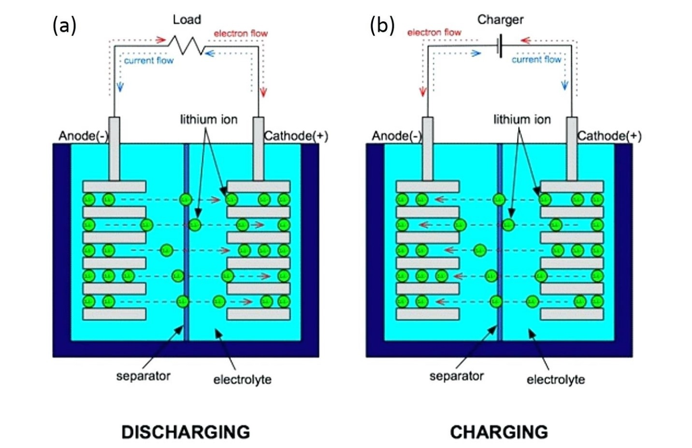

Introduction
Cheap, clean/renewable energy generation and usage is a very large goal that many scientists and companies around the world are trying to achieve. Many believe this can be attained through solar power generation, a promising technology, but not as efficient as natural gas or fossil fuels, as solar panels can only convert a small amount of sunlight into electricity, and during night time or cloudy days, no power can be generated at all. The solution to this is energy storage. Famous scientist and entrepreneur Elon Musk, and his company Tesla are one of the organizations that are researching and developing this technology. In 2015, he announced that his company was now incorporating the lithium ion battery technology used in the company’s electric cars into a home electric storage battery known as the Tesla Powerwall. It is a device small enough to fit on the wall of one’s home and is capable of storing up to 13.5 kWh of electrical energy generated by solar panels or from the power grid for later use. In the event of a power outage, it can also act as a backup supply of energy. The image in figure 1.0 shows the specs of the latest model of Tesla’s Powerwall:
Figure 1.0 (Tesla, 2018)
![Tesla Specs - Usable Capacity: 13.5 kWh, Depth of Discharge: 100%, Efficiency: 90% round trip, Power: 7kW peak & 5kW continuous, Supported Applications: solar self consumption & time of use load shifting & backup & off grid, Warranty: 10 years, Scalable: up to 10 powerwalls, Operating Temperature:-4F to 122F/-20C to 50C, Dimensions: LxWxD 1150mm x 755mm x 155mm, Weight: 276lbs/125kg, Installation: wall or floor mounted & indoor or outdoor, Certification: north american and international standards & grid code compliant](../img/tesla-specs.png)
Chemistry Behind Lithium Ion Batteries
Lithium ion batteries have many applications and are used in many devices such as phones, computers and electric cars. This is because of their rechargeable capabilities and because lithium is a small, light metal with high electrochemical potential. Like all batteries, Li-ion batteries have three main components – an electrolyte, negatively charged anode and positively charged cathode. The cathode is made up of a pure lithium metal oxide. There are many variations for this, such as Lithium-Cobalt-Oxide, Lithium-Phosphate, and Lithium-Manganese-Oxide which each have their own pros and cons. The lithium metal oxide used in the Tesla Powerwall is Lithium-Nickel-Manganese-Cobalt-Oxide (LiNiMnCoO2 or NMC) because it has high specific energy, low internal resistance, high charging rate, and good stability. The anode of all lithium ion batteries is usually graphite, a form of carbon. Finally, the electrolyte is made of a lithium solution, and serves as a transport medium for lithium ions. Connected to the anode and cathode are conductive metals (usually aluminum and copper) which allows for current flow between the two electrodes. In between the anode and cathode, there is a small separator, to prevent a short circuit. Fortunately, the separator is microporous, which means the lithium ions can pass through the separator to the other side.
Figure 1.1 (Diagram Chart Gallery, 2018)
When a Li-ion battery is charged, a Redox reaction occurs. In the cathode, an oxidation reaction takes place, and the lithium metal oxide will lose electrons. These electrons travel through the conductive metal towards the anode. After losing electrons, the lithium atoms within the cathode will become an ion and dissolve into the electrolyte solution. Like the electrons, they will move towards the negatively charged anode, however they will travel through the electrolyte solution and separator instead of the conductive metals. The electrons from the cathode that are now in the anode will intercalate with the new lithium ions onto the graphite, where the electrons are stored until needed. See figure 1.1(b) for reference.
When the battery undergoes discharge and outputs electricity, it does basically the same thing. The main difference is the lithium ions and electrons are flowing from the anode to the cathode. The electrons will also flow through a load, powering it. See figure 1.1(a) for reference.
Applications and Benefits of the Tesla Powerwall
The Tesla Powerwall is a device that harnesses the innovative and constantly evolving technology of lithium ion batteries. It is designed to look more like an art piece than the technological marvel it really is. Capable of storing 13.5 kWh of energy generated from solar panels, or the power grid, and also serving as a backup power supply during power outages. Up to 10 Powerwalls of the latest model can be stacked side-by-side for more power and storage, and each one can last for 10 years without maintenance. Elon Musk even claims that if one wanted to, they could stop relying on power from the grid, and solely use the energy generated by solar panels stored in the Powerwall. Even if they didn’t, having an energy storage battery would still save hundreds of dollars in energy costs as users would rely less on the grid, and less power will be wasted. However, the greatest benefits of this technology probably have to do with its environmental implications. With continued development, this type of technology would reduce our reliance on power from the grid, which is mostly generated from powerplants that heavily pollute and damage the environment. The usage of solar panels would increase, which in turn would reduce usage of carbon fuels, and decrease carbon emissions and pollution.
Limitations and Disadvantages of Tesla Batteries
While the technology of the Tesla Powerwall is promising, and already offers many benefits, it is not perfect, and still requires lots of development. First of all, its energy output isn’t very efficient. It is capable of storing 13.5 kWh, however it is only able to output 5kW of continuous output. While this an improvement from the first Tesla Powerwall, 5kW of continuous output isn’t enough to power an average home during peak times when electricity is needed most. So, if one was to go completely off the grid, they would need to install 2-3 Powerwalls in their home. Furthermore, like all batteries, the Tesla Powerwall will lose its storage capacity over time. This is due to the fact that in a Li-ion battery, lithium ions are frequently being inserted into the graphite anode, which eventually breaks it apart, reducing performance and efficiency. Finally, at least for now, these Powerwalls are not very cost effective. One Tesla Powerwall alone costs almost $6000. Supporting hardware usually costs around $700 and installation, depending on where the user lives, can cost between $2000-8000. That’s over $8500 minimum for this device. These three limitations are the main reason why opinions are so split for this technology. For now, it only really benefits remote areas, places where power is limited or expensive, with lots of sunlight, and an already established solar panel system.
Conclusion
The Tesla Powerwall is an amazing piece of technology that uses advanced lithium ion batteries to store and output energy to and for your homes. It is promised by Elon Musk that this will be the technology of the future with many applications and benefits, including saving energy bills, reducing pollution and promoting clean sustainable energy. However, this technology still has many limitations, as it has low energy output, and is not yet cost effective. But this is only because it is only an early generation of this type of technology. When developed further, this device will have more positive social, environmental, and economic implications and truly change the world.